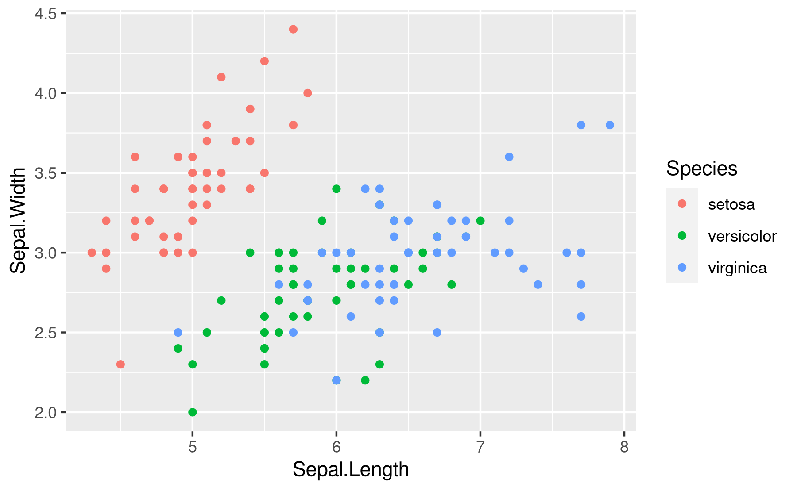
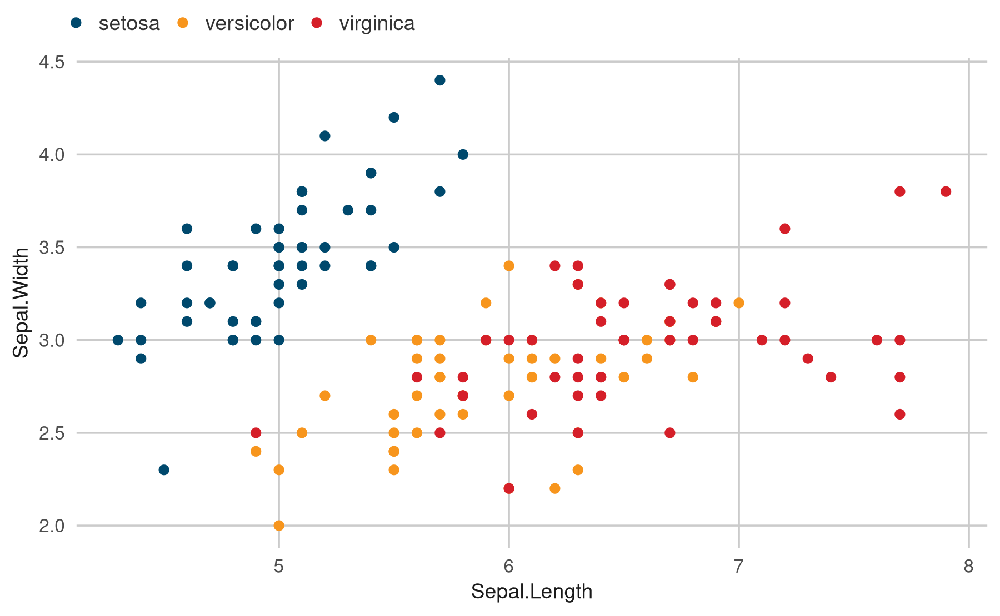
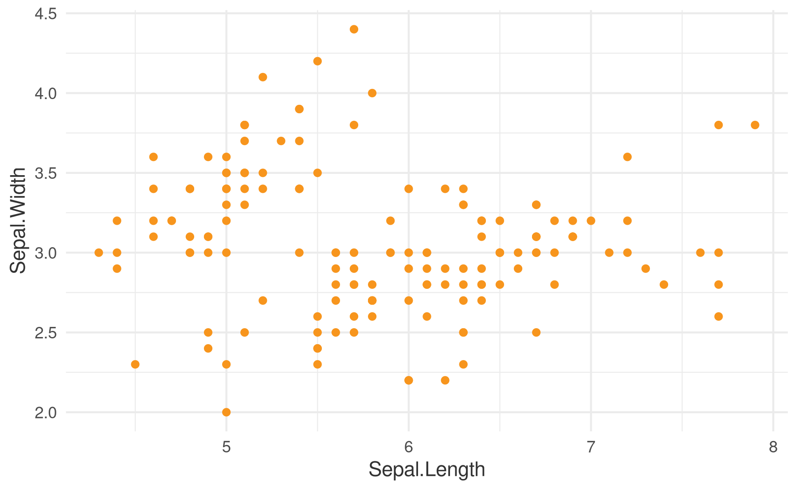

The goal of onsvplot is to provide ggplot theme and color elements to help create graphics in the style of the National Observatory for Road Safety.
Overview
This package provides two main functions and a palette of colors:
-
theme_onsv(): Apply the ONSV theme to a ggplot object; -
scale_discrete_onsv(): Apply the ONSV color palette to a ggplot object; -
onsv_palette: A data object which provides the full palette of colors, including its hex codes.
Installation
You can install the development version of onsvplot like so:
remotes::install_github("pabsantos/onsvplot")Or the CRAN version:
# install.packages("onsvplot")Example
This is a basic example which shows you how to apply the functions included in this package. First, a basic ggplot graphics:
library(onsvplot)
library(ggplot2)
plot1 <-
ggplot(data = iris, aes(x = Sepal.Length, y = Sepal.Width, color = Species)) +
geom_point()
plot1
Then, apply theme_onsv() to change the theme of the plot and scale_discrete_onsv() to change the colors:
theme_set(theme_onsv())
plot1 + scale_discrete_onsv()
If only one color is necessary in the plot, it is possible to use one of the colors included in the onsv_palette object;
str(onsv_palette)
#> List of 12
#> $ blue : chr "#00496d"
#> $ yellow : chr "#f7951d"
#> $ red : chr "#d51f29"
#> $ green : chr "#1fa149"
#> $ pink : chr "#ec0d6b"
#> $ orange : chr "#f05f22"
#> $ lightblue : chr "#99B6C5"
#> $ lightyellow: chr "#FCD5A5"
#> $ lightred : chr "#EEA5A9"
#> $ lightgreen : chr "#A5D9B6"
#> $ lightpink : chr "#F79EC4"
#> $ lightorange: chr "#F9BFA7"applying directly to the color or fill of the geom:
ggplot(data = iris, aes(x = Sepal.Length, y = Sepal.Width)) +
geom_point(color = onsv_palette$yellow)
Citation
If you want to cite this package, you can cite as:
#> To cite package 'onsvplot' in publications use:
#>
#> Santos PAB (2023). _onsvplot: National Road Safety Observatory (ONSV)
#> Style for 'ggplot2' Graphics_.
#> https://github.com/pabsantos/onsvplot/,
#> https://pabsantos.github.io/onsvplot/.
#>
#> A BibTeX entry for LaTeX users is
#>
#> @Manual{,
#> title = {onsvplot: National Road Safety Observatory (ONSV) Style for 'ggplot2' Graphics},
#> author = {Pedro Augusto Borges Santos},
#> year = {2023},
#> note = {https://github.com/pabsantos/onsvplot/, https://pabsantos.github.io/onsvplot/},
#> }